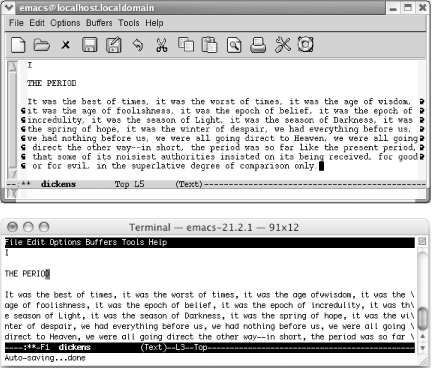

第２章.编辑
现在你已经知道打开关闭Emacs以及简单的文件操作,现在介绍如果在文件中移动 和编辑文件.Emacs提供很多种在文件中移动的方式.开始时会为如此多的方式做 相同的事而感到困惑.耐心学习,困惑会越来越少,对各式各样的Emacs指令你会觉 得很受用.方式学得越多,你移动光标到目标位置的按键操作越少.
如果你想边学边练(这样有助于你更好的学习),那就从你手边的文稿上录入一两 页文字,报纸就很好.当你学完列举的内容后,就可以修正任何编辑错误了.学用编 辑器主要是培养手指习惯而不是记住书上的内容.只有开始输入才能真正养成正 确的手指习惯.
当你输入到显示区的右侧边缘,有两个选择,可以按 回车键 转到下一行,也可以 继续输入.如果输入很长的一行并且一直没有按 回车键 ,Emacs在你输入到显示 区右侧边缘,它会在行尾显示一个弯箭头,并在下一行的开始也显示一个弯箭头,来 标识下一行是前一行的延续(见图２-１).如果Emacs在一个非图形环境运行,会用 一个反斜杠来代替.

图２-１.图形界面的Ｅmacs用弯前头标识连续行;终端界面用反斜杠
重换行是一个副模式,可以在你编辑时保持文件整齐.默认情况是不启动的.查看模 式行,如果能看到 Rifill ,表明你已经在重换行模式下.如果没有,你可以输入 M-x refill-mode Enter 为当前缓冲区打开重换行模式.如果不习惯重换行模 式,再次输入 M-x refill-mode Enter 将其关闭.这个指令就像个电灯开关一 样:打开或关闭重换行模式.
你或许想一进入编辑状态就打开重换行模式.我们会在本章结束的时候介绍如何 实现该功能.
有些时候,重换行模式令人厌烦,根据Ｅmacs的帮助还有一种模式.你或许更喜欢 auto-fill 模式.可以以相同的方式进入:输入 M-x auto-fill-mode Enter .可 以在模式行上看到 Fill.
当你输入完一段后, auto-fill 格式化该段.然而当你在编辑本段时, auto-fill 模式不会自动给本段换行.你可以用段落换行指令 M-q .
如果你打开了重换行模式,又想用 auto-fill 模式,依然要输入 *'M-x refill-mode Enter'* 来关闭重换行模式.否则两个模式都会出现在模式行,并且 重换行模式会无视 auto-fill 模式的存在,仍旧自动格式化段落.
在格式化段落时需要特殊注意一点.在文本模式,一个段落是指缩进的或者在前后 各有一行空行.如果你的文件中一个空行都没有,那么 Ｅmacs 会认为这个一个段 落.输入 Ｍ-q 会忽略换行,并把它格式化成一个很大的段落.这个指令对数据文 件,程序,或者一个没有空行的文件是个问题.幸运的是,按 Ｃ-_ 或者 Ｃ-x u (都表示撤消),可以将段落复原.如果经常创建没有空白行的文件,这里有一些建 议:
- 不使用文本模式,而是使用段缩进文本(paragraph indent text mode).在这 个模式下,以空白字符开头的行都被认为是一个新的段落.输入'Ｍ-x paragraph-indent-text-mode'来启动该模式.在模式行会显示Ｐarindent.第 六章会有详细介绍.
- 使用其他模式而不是文本模式进行编写.例如:使用ＨＴＭＬ模式或者LaTeX模 式,在第８章会介绍如何编辑这些类型的文件.这些特殊的模式重新定义了段 落的含义,让段落换行指令(Ｍ-q)正确的工作,否则这些模式和文本模式没什 么区别.
- 不是给一段换行,而是给文本中标记的一个区域(区域,会在本章介绍什么是区 域)换行.确定你要格式化的区域,然后安排按 'M-x fill-region Enter'.这 个指令会将区域内的各个段格式化.
表2-1列出自动给文本换行以及自动换行模式格式化段落的指令。
| 快捷键 | 命令名 | 功能 |
|---|---|---|
| (无)1 | refill-mode 重换行模式 | 开关重换行模式，可以自动格式化文本。 |
| (无) Options–>Word Wrap in Text Modes | auto-fill-mode 自动换行模式 | 开关自动换行模式，自动对编辑完成的段落进行格式化。 |
| M-q | fill-paragraph | 重新格式化段落。 |
| (无) Edit–>Fill | fill-region | 重格式化区域内的各段落。 |
Footnotes:
1 记住第一列的（无）表示输入 M-x 后面输入第二列的指令，然后按 回车鍵 来执行指令。这里没有默认的快捷键。要使用重换行模式指令，输入 M-x refill-mode Enter .
Date: 2010-10-26 14:39:06 CST
HTML generated by org-mode 6.36c in emacs 23